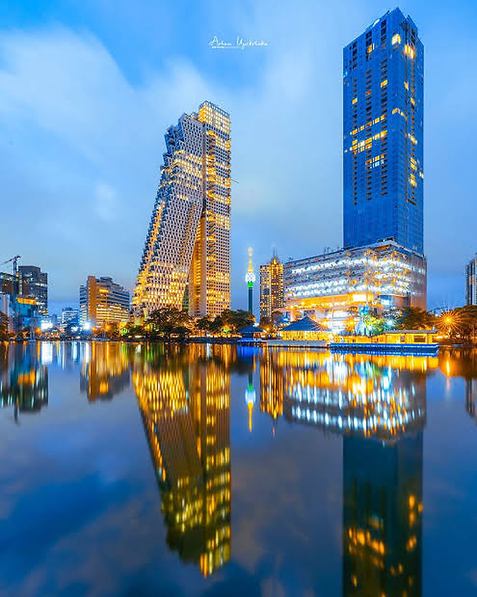
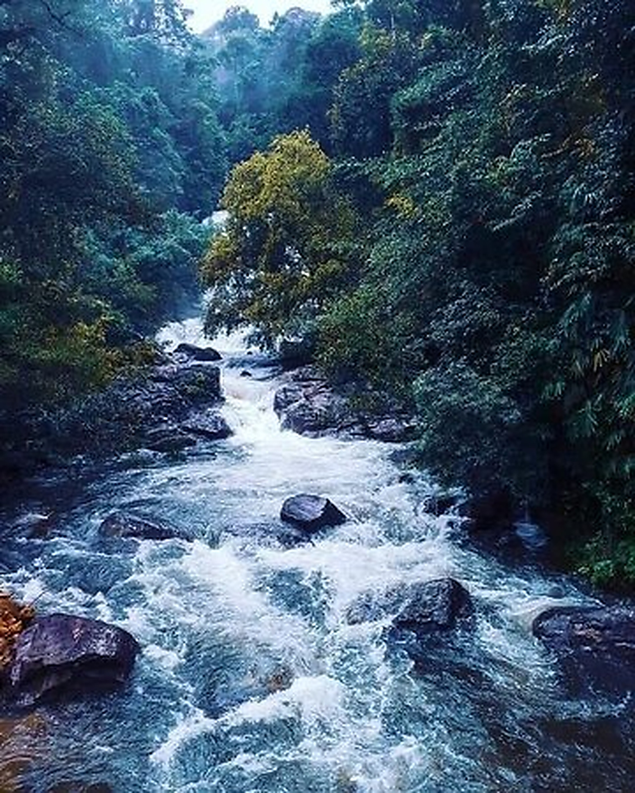
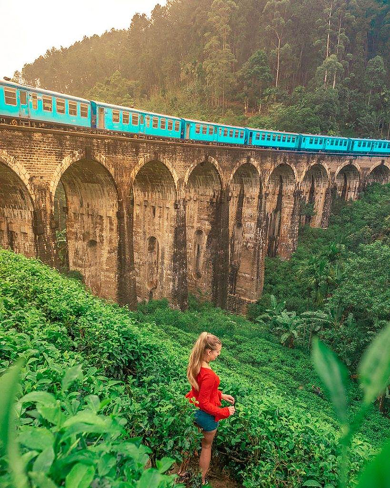
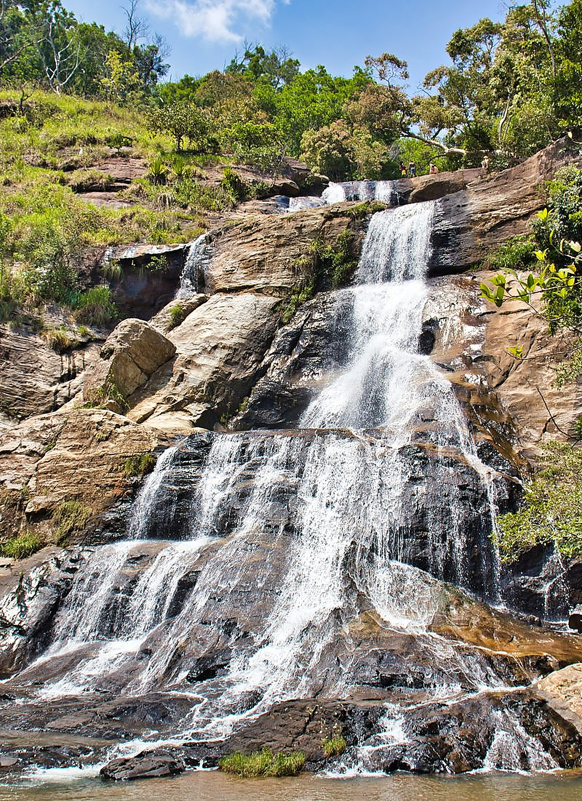

Adventure
Boat rides, hikes, surf, waterfalls and wild roads.
Private, personalised journeys that blend Sri Lanka’s icons with the people, places and moments most travellers miss.
Tell us what excites you, how you like to travel, how much time you have and the level of comfort you want. We shape the route around your rhythm rather than forcing you into a fixed itinerary.
“I could organise Sri Lanka myself — but Worldscape can create a better journey than I could piece together alone.”
That is the value we aim to deliver from the first message to the airport drop-off.

Pick one style or blend several. Your itinerary is built from your interests, not from a catalogue.
Boat rides, hikes, surf, waterfalls and wild roads.
Safaris, elephants, birding and nature-first stays.
Roadside stops, fresh king coconut and local flavours.
Kandy, temples, ancient cities and living heritage.
Tea country, cool mornings and unhurried days.
Ocean views, boutique stays and easy beach time.
Use these as inspiration and we’ll change the pace, hotels, experiences and route to suit you.
Your host is the person who makes the journey feel effortless — navigating the island, reading the day, suggesting the right stop and helping when plans change.
We are not trying to be the cheapest. We are trying to make every extra dollar feel justified.
From the hill country to the south coast, these are the textures, colours and experiences that make Sri Lanka feel unforgettable.



